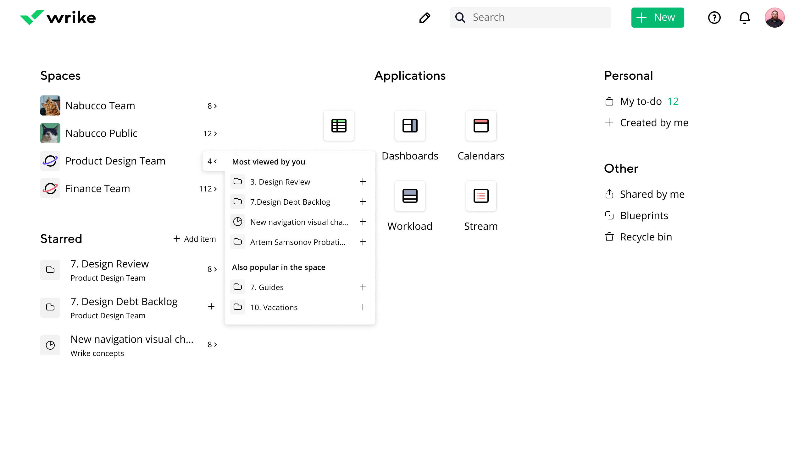

<!DOCTYPE html>
<html>
  <head>
    <meta charset="utf-8"/>
    <meta name="viewport" content="width=device-width, initial-scale=1.0"/>
    <meta property="og:type" content="article"/>
    <meta property="og:title" content="Дизайн-хакатон: домашняя страница сервиса Wrike • Артём Самсонов • Продуктовый дизайнер"/>
    <meta property="og:description" content="Краткая презентация того, как я визуализировал минималистичный концепт домашнего экрана"/>
    <meta property="og:image" content="http://artemsamsonov.com/img/default.jpg"/>
    <link href="https://fonts.googleapis.com/icon?family=Material+Icons" rel="stylesheet"/>
    <link rel="stylesheet"/><!-- Yandex.Metrika counter --> <script type="text/javascript" > (function(m,e,t,r,i,k,a){m[i]=m[i]||function(){(m[i].a=m[i].a||[]).push(arguments)}; m[i].l=1*new Date();k=e.createElement(t),a=e.getElementsByTagName(t)[0],k.async=1,k.src=r,a.parentNode.insertBefore(k,a)}) (window, document, "script", "https://mc.yandex.ru/metrika/tag.js", "ym"); ym(88097279, "init", { clickmap:true, trackLinks:true, accurateTrackBounce:true, webvisor:true }); </script> <noscript><div></div></noscript> <!-- /Yandex.Metrika counter -->
    <title>Дизайн-хакатон: домашняя страница сервиса Wrike • Артём Самсонов • Продуктовый дизайнер</title>
  <link href="./css/style.bundle.css" rel="stylesheet"></head>
</html>
<body class="body_light">
  <header class="header header_light">
    <div class="header__logo"><a class="header__logo-link" href="index.html">Артём Самсонов</a></div>
    <!--div.header__menu
    a.header__menu-elem(href="http://artemsamsonov.com/skills") Навыки
    a.header__menu-elem(href="http://artemsamsonov.com/my-experience") Работы
    a.header__menu-elem(href="http://artemsamsonov.com/#contacts") Контакты
    -->
  </header>
  <div class="content">
    <div class="article">
      <h1>Дизайн-хакатон: домашняя страница сервиса Wrike</h1>
      <p class="article__annotation">Краткая презентация того, как я визуализировал минималистичный концепт домашнего экрана для продукта Wrike</p>
      <h2>Clean and minimalistic</h2>
      <p>This concept based on the two-colours logo’s metaphor. Functionality has a look of the primary black and additional accent colours from our new brand book. Borders and shadows are used only for applications as a special part of our product.</p>
      <p>The bottom right part we can use for Wroodle :) —  intermittently changed illustration.</p>
      <p class="article__image"><a href="../img/hakaton-01.jpg" target="_blank"></a>
        <!--span.article__image-caption-->
      </p>
      <h2>Two modes</h2>
      <p>The interface has two modes: viewing and editing. If you want to move sections to another area, click to the pen icon. You can switch primary sections (Spaces or Starred) to the secondary area and vice versa. I visualized it on the "Column-view-editing" artboard.</p>
      <p class="article__image"><a href="../img/hakaton-02.jpg" target="_blank"></a>
        <!--span.article__image-caption-->
      </p>
      <h2>Section’s replacing</h2>
      <p>You can replace every section to every place. Sections are changed view after replacing.</p>
      <p class="article__image">
        <iframe src="https://www.youtube.com/embed/RCoqb1qo-X4" title="YouTube video player" frameborder="0" allow="accelerometer; clipboard-write; encrypted-media; gyroscope; picture-in-picture" allowfullscreen></iframe>
      </p>
      <h2>Useful actions</h2>
      <p>I thought a lot about useful actions. For example, for spaces. We can navigate from the home screen to the most related folders or projects — most related for you or most related for other teammates. And you can create a task in these folders. I think it will make Wrike more quickly.</p>
      <p class="article__image"><a href="../img/hakaton-03.jpg" target="_blank"></a>
        <!--span.article__image-caption-->
      </p>
      <h2>Dark theme</h2>
      <p>Just dark theme. Based on our new brand colours.</p>
      <p class="article__image"><a href="../img/hakaton-04.jpg" target="_blank"></a>
        <!--span.article__image-caption-->
      </p>
      <p class="article__image"><a href="../img/hakaton-05.jpg" target="_blank"></a>
        <!--span.article__image-caption-->
      </p>
    </div>
  </div>
<script type="text/javascript" src="./js/bundle.js"></script></body>